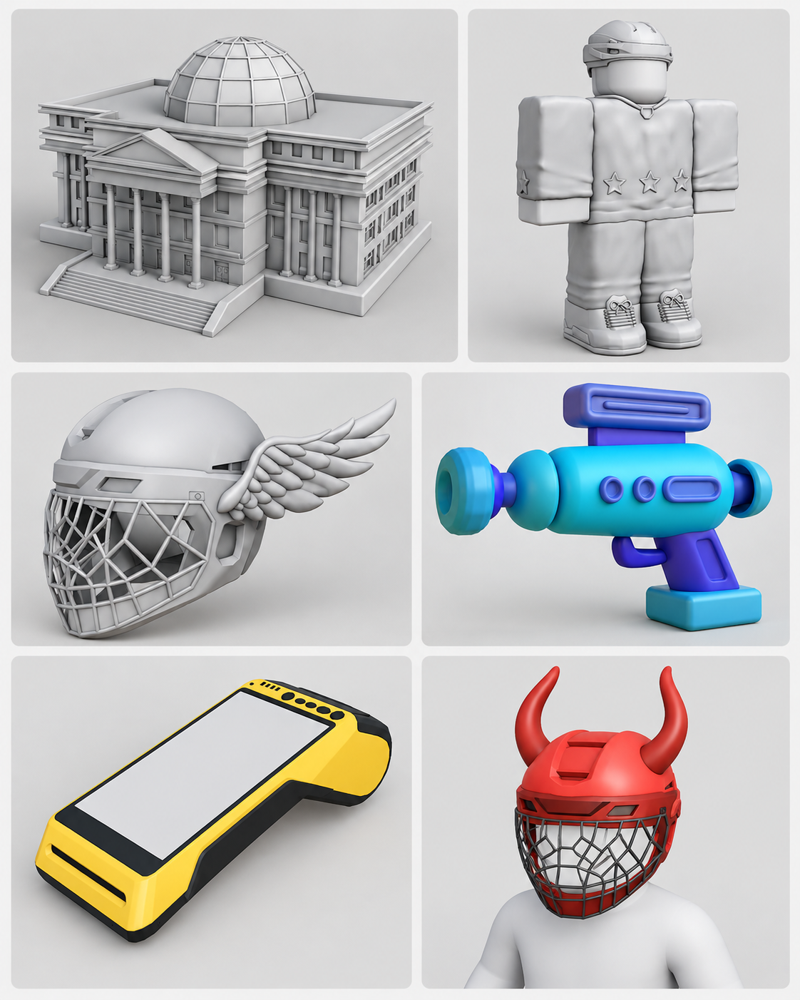

Мене звати Васильків Назарій Васильович.
Я навчаюсь на першому курсі Ужгородського національного університету за спеціальністю "Інженерія програмного забезпечення".
Я скопійна та товариська людина, люблю спілкуватися з іншими людьми та дізнаватися щось нове. Для мнене дуже важливі сім'я та друзі.
Зараз я тільки починаю вивчати веб-розробку. Хочу краще розібратися з HTML, CSS та JavaScript.
У майбутньому планую розвивати свої навички в програмуванні та веб-розробці, вивчати нові технології та інструменти, та навчитися самостійно створювати цікаві й корисні проєкти.
Однією з моїх ідей є створення власного автомобільного сайту AutoDrive, на якому можна буде переглядати та порівнювати різні автомобілі.
Нижче наведено зображення частини моїх 3D-моделей:
